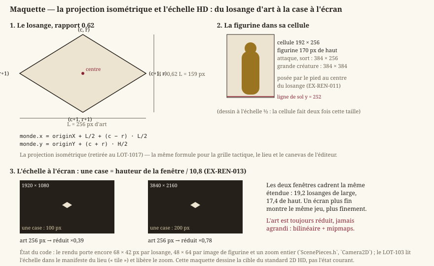
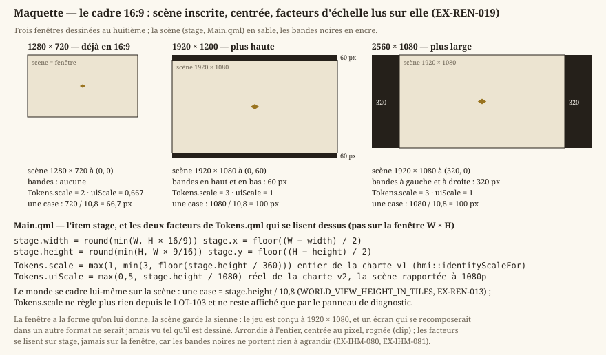
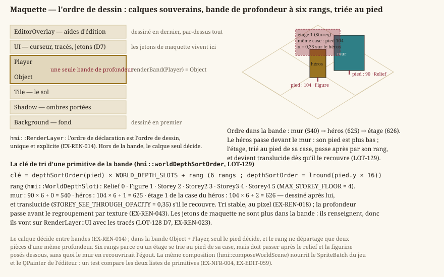
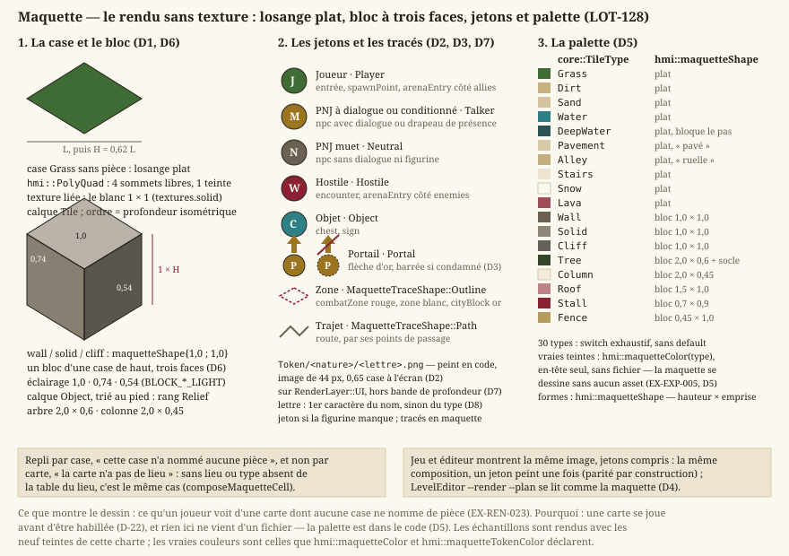

Rendu & cible technique
Statut : livré pour le lieu qu'on parcourt, l'arène et le canevas de l'éditeur : scène composée sur QRhi (Direct3D 11), tri par profondeur, textures chargées depuis des fichiers, texte et traductions par Qt. Dépend de
vision.md.
1. Cible technique
- EX-REN-001 — Le jeu doit fonctionner sous Windows 10/11 (x64).
- EX-REN-002 — Le rendu doit s'appuyer sur Direct3D 11, atteint au travers de QRhi (
EX-REN-050), qui retient ce backend par défaut sous Windows. Direct3D 12 est écarté : surdimensionné pour de la 2D. - EX-REN-003 — La fenêtre du jeu doit être redimensionnable, avec titre et icône ; aucun écran n'en contraint la taille (
EX-IHM-080).
2. Rendu 2D
Tout ce chapitre repose sur une seule convention géométrique : la scène est peinte en isométrie, et le losange de sol a un rapport hauteur/largeur de 0,62. De là découlent l'échelle de l'art, la façon dont une figurine se pose sur sa case, et le facteur d'affichage déduit de la fenêtre.


Note — Depuis le
LOT-103, le code suit cette maquette : l'échelle de l'art se lit dans le manifeste du lieu ("tile": [256, 159]), la figurine se découpe par sa cellule entière, et le zoom est libre. La maquette duLOT-101, rendue par le moteur, est comparée à la maquette montée à la main partest_hd_mockup_render.cpp.
- EX-REN-010 — Le rendu doit dessiner une carte à partir des pièces de la planche de son lieu (
EX-VIS-008) : une pièce de sol par case, une pièce de relief là où la carte en pose une, la table d'apparence du lieu décidant laquelle. - EX-REN-011 — Le rendu doit dessiner les figurines — héros et PNJ — avec transparence, posées sur leur case par le pied.
- EX-REN-051 — Une figurine est un modèle : un maillage lié au squelette de sa silhouette, que ses os déforment (
EX-VIS-008). Le dossier d'un personnage le déclare par une fiche (character.json: son modèle, son squelette) ; le squelette déclare ses clips —idle,walk,attack,cast,hit,death—, leur durée, leur boucle et leur image clé, l'instant où le coup porte (skeleton.json,EX-REN-005). Un modèle s'oriente librement, vers son pas ou vers sa cible. Un personnage sans modèle prend le mannequin de sa silhouette ; faute de mannequin, son marqueur (EX-CNT-041). Seuls les effets restent des bandes d'images. La cadence de la marche est celle du clip, jamais du code (EX-EXP-011). - EX-REN-005 — Les animations doivent être décrites par des données (clip nommé, suite d'images, durée par image, bouclé ou joué une fois) et non codées en dur. Un asset sans description d'animation est affiché comme une image fixe.
- EX-REN-013 — La caméra du lieu doit être orthographique et fixe : tournée de 45°, inclinée de asin 0,62 ≈ 38,3°, sans fuyante ni rotation libre — c'est ce qui redonne le losange de rapport 0,62 de l'ancienne projection isométrique de Core (retirée au
LOT-1017), et la projection reste affine : le pointage d'une case au sol ne change pas. Elle suit le héros, bornée à la scène (un axe plus étroit que la vue est centré), à un facteur d'affichage libre (EX-ARCH-022) et déduit de la définition de la fenêtre : la largeur d'une case à l'écran vaut la hauteur de la fenêtre divisée par 10,8, soit 100 px à 1080p et 200 px à 2160p. Toutes les définitions cadrent donc la même étendue de monde — 19,2 losanges de large, 17,4 de haut — et un écran plus fin montre le même jeu plus finement, jamais plus de jeu. La « fenêtre » est ici la scène 16:9 qu'EX-REN-019y inscrit. > Mise en œuvre (LOT-1003).hmi::IsoViewporte l'orientation — où tombe un point élevé, > à quelle profondeur —,hmi::PlaceCamerale cadrage, repris au flottant près de la caméra > plane qu'elle remplace : une image dressée occupe exactement les pixels qu'elle occupait. - EX-REN-019 — La scène du jeu est toujours au format 16:9 : dans une fenêtre d'un autre format, le plus grand rectangle 16:9 qui tient y est inscrit, centré au pixel, et la fenêtre peint le reste en noir — des bandes sur les côtés pour une fenêtre plus large, en haut et en bas pour une plus haute. Les facteurs d'échelle de l'interface et de la scène se lisent sur ce rectangle, jamais sur la fenêtre. Laisser un écran se recomposer dans n'importe quel format donnerait un jeu conçu à 1920 × 1080 qui n'est jamais vu tel qu'il est dessiné, et une scène posée à un demi-pixel flouterait tout ce qu'elle contient.


Les deux exigences qui suivent décident qui passe devant qui. Elles se complètent : le calque tranche entre familles (le curseur est toujours au-dessus du sol), la profondeur tranche à l'intérieur de la famille où le monde se dessine.


- EX-REN-014 — Le rendu doit gérer un ordre de dessin par calques, défini par un ordonnancement unique et explicite (
hmi::RenderLayer) dont aucun calque concurrent ne peut s'écarter : la scène, puis l'interface et les aides d'édition. Le calque tranche entre familles ; à l'intérieur de la scène, ce qui passe devant quoi se décide par la profondeur (EX-REN-018), jamais par un calque de plus. - EX-REN-018 — Dans la scène, qui passe devant qui doit venir de la profondeur, et non du calque. Pour un maillage, c'est le tampon de profondeur qui décide, sans qu'aucun code de tri n'intervienne : les maillages opaques l'écrivent. Une image de scène se dresse face à la caméra, teste la profondeur sans l'écrire — ses bords sont adoucis —, et les images se trient entre elles par leur pied, le bord bas, point de contact avec le sol : une image passe devant ce qui est plus haut qu'elle à l'écran, derrière ce qui est plus bas. Ce tri reste stable et quantifié au pixel : à profondeur égale, deux images gardent un ordre constant d'une image à l'autre. Hors de la scène, l'ordre des calques reste souverain (
EX-REN-014). Le tri par le pied ne vit que tant qu'il reste une image de décor : il part avec la dernière, à la0.0.3. > Mise en œuvre (LOT-1003). Une pièce dont le manifeste cite un maillage ("mesh") se > dessine parhmi::MeshBatch, avant les images de la même passe. Une image à plat (un sol) > prend la profondeur du sol sous elle ; une image dressée est un plan vertical tourné vers la > caméra, posé sur la ligne de son pied, et le sol au-dessous. La profondeur n'est testée que si > l'image a un maillage : sans lui, le rendu est celui d'avant, au pixel. Les images se trient > toujours par le pied dans une bande de profondeur de six rangs — le relief, la > figurine, puis les étages un à quatre (EX-LVL-025,LOT-129) ; les jetons de maquette n'y > sont pas, ils sont de l'interface en scène (EX-REN-023) et passent devant tout volume. Le > mécanisme d'étage part quand les toits deviennent des maillages : à la0.0.3(LOT-151), > leLOT-1004ayant été clos sans modification.
Le rendu de maquette : une carte sans texture (LOT-128)
Une carte se dessine et se joue avant d'être habillée (décision D-22). Le rendu doit donc avoir un mode où rien ne vient d'un fichier : ni sol, ni mur, ni figurine.


- EX-REN-023 — Une case qui ne nomme aucune pièce se dessine en losange plat de la couleur de son type — une couleur par type, distincte de ses voisines —, et un type qui arrête le pas s'extrude en bloc à trois faces d'une case de haut ; les entités sont des jetons ronds à lettre dont la couleur se déduit du format (vert le joueur, jaune le PNJ qui parle ou qu'un drapeau conditionne, rouge l'hostile, gris le muet ; flèche d'or pour un portail, barrée s'il est condamné ; pointillé pour une zone). La palette vit dans le code : une maquette doit se dessiner quand aucun fichier d'asset n'est présent, et une palette chargée du disque réintroduirait la dépendance que le mode supprime. Le repli se déclenche sur « cette case n'a nommé aucune pièce », pas sur « la carte n'a pas de lieu » : la carte sans lieu et la pièce que le lieu ne couvre pas — l'eau du Colisée — se referment du même geste. Le jeu et l'éditeur montrent la même image, jetons compris (
EX-EDIT-059,LevelEditor --render --plan). - EX-REN-041 — Le rendu doit charger ses textures depuis des fichiers image (PNG au minimum), décodés en pixels RGBA puis créés en texture GPU. Le filtrage suit la nature de l'asset (
EX-ARCH-022) — refondu auLOT-66: figer le plus proche voisin aurait rendu crénelée toute illustration peinte. - EX-REN-042 — Les assets graphiques doivent être externalisés en fichiers éditables hors code (remplacer le fichier suffit à changer l'apparence), copiés à côté de l'exécutable comme les cartes et les traductions. Les images des kits viennent du verrou et non de Git (
EX-CNT-070) : « remplacer le fichier » se fait par une publication, jamais par un commit. - EX-REN-043 — Le rendu doit pouvoir dessiner, en une seule image, des primitives provenant de plusieurs textures distinctes, selon l'ordonnancement de calques unique de
EX-REN-014. - EX-REN-007 — Un asset graphique absent ou illisible n'interrompt jamais le rendu : il est remplacé par un repli visible (damier, ou marqueur généré pour une figurine) et journalisé une fois avec le nom du fichier (
EX-NFR-040).
La lumière du lieu (LOT-1007)
- EX-REN-052 — Le lieu doit être éclairé à l'heure du monde (
EX-EXP-015). Ce que l'heure fait de la lumière se lit dans une table en données (Assets/Common/Lighting/daylight.json,core::DayLightTable) : des clés d'heure, interpolées en ligne droite, la dernière du jour rejoignant la première du lendemain. La lumière ne saute pas : d'une minute à la suivante, aucune de ses composantes ne bouge de plus de quatre centièmes. Un rendu auquel on ne règle aucun éclairage dessine comme avant le lot, au pixel : c'est celui d'une vignette, d'un plan, d'un test qui ne s'occupe pas de lumière. - EX-REN-053 — Un maillage reçoit une ambiance et une lumière dirigée — le soleil le jour, la lune la nuit — selon sa normale ; une image de scène, qui n'a pas de normale, est multipliée par la teinte de l'heure et garde la lumière qu'on lui a peinte. À midi cette teinte est blanche : une image est alors telle que peinte, et la lumière modèle un maillage sans changer sa teinte. La table tient
ambient + sun × (sin(élévation) + 0,3) / 1,3égal àtint: un sol en maillage et un sol en image posés côte à côte ont la même lumière. - EX-REN-054 — La lumière dirigée jette des ombres portées, par une carte d'ombres unique vue du soleil. Y portent leur ombre les maillages — personnages compris — et, pour chaque pièce de décor en image, la boîte de son emprise, haute et large comme son image (
hmi::WorldShadowBox). La reçoivent les maillages et le sol ; une image dressée ne la reçoit pas. Le centre de la carte est calé sur ses texels : les bords d'ombre ne frémissent pas quand la caméra suit le héros. Le joueur règle sa finesse ou l'éteint (EX-IHM-083). - EX-REN-055 — Les lumières de nuit éclairent autour d'elles, selon la distance, et un maillage selon sa normale. Une source se déclare par la pièce qui la porte (champ
lightdu manifeste de son kit) ou par une entitélightde la carte (EX-EDIT-106). Elles s'allument avec le champlampsde la table, sauf celles déclarées toujours allumées ; une flamme tremble. Une image éclaire au plus seize sources, les plus proches de son centre. Les lampes ne s'ajoutent pas à la lumière du jour : elles comblent ce qui lui manque, et un sol clair sous deux lanternes ne brûle pas. - EX-REN-056 — La lumière ne doit jamais coûter la lisibilité : une marque d'interface, un jeton, une aide d'édition ne reçoivent ni teinte ni ombre ; un effet garde son éclat ; une pièce peut déclarer ce qu'elle en garde (champ
glow, une flamme). La luminance moyenne d'une image de nuit dépasse le tiers de celle de midi. > Mise en œuvre (LOT-1007). Tout se calcule dans le repère de la vue, qui est une rotation > de celui du lieu :hmi::buildSceneLightingy amène le soleil, la verticale et les sources une > fois par image, et remplit le bloc uniformeLightingque lisentsprite.fragetmesh.frag> (hmi::LightingBlock). Une passe d'ombres, profondeur seule, précède la passe de l'image > (hmi::MeshBatch::recordShadow). Le décor de la0.0.2.5reste en images (D-43) : le soleil > ne le modèle pas, il le teinte et lui fait jeter l'ombre de sa boîte ; le soleil sur > l'architecture vient avec le kit repris en maillages, à la0.0.3(LOT-151).
Le décor dans le nouveau moteur (LOT-1019)
Dans Unreal Engine 5 (0.0.3), ce qui précède sur le losange, le tri par le pied et les images dressées ne vaut plus que pour l'ancien dépôt (D-49, D-58). Le décor est fait de maillages au maître, en Nanite, éclairés par Lumen ; ce qu'une pièce doit être est dans le standard 3D.
- EX-REN-057 — Une pièce de décor entre dans le projet du moteur par script, depuis sa fiche — l'entrée du manifeste des maîtres, d'un kit ou des bibliothèques du moteur (licence et identifiant) —, sans geste dans l'éditeur (
scripts/assetsGeneration/import_scenery_unreal.py, quebuild_level.pyappelle pour chaque maillage qu'une carte pose) : importée au maître si elle manque ou a changé, en Nanite, la collision prise sur son maillage. Chaque sortie est citée par le script ou la fiche qui la produit (check_orphans.py). Une pièce dont l'empreinte diffère de sa fiche n'entre pas. - EX-REN-058 — Une pièce se rend avec sa matière complète : chaque matière du
.glbdevient une instance d'une matière parente du décor (M_Scenery, ouM_SceneryMaskedpour un alpha), à deux faces, utilisable en instances et en Nanite — sans quoi le jeu lancé lui substitue la matière par défaut —, avec ses facteurs glTF ; sa couleur de base (sRGB) et son occlusion-rugosité-métal (linéaire) sont compressées en BC7, son relief en BC5 (vert retourné). Une image que plusieurs pièces portent n'est importée qu'une fois. Une carte absente se rend avec la valeur neutre de son rôle et se dit dans la fiche (material.missing). - EX-REN-059 — Le post-traitement se juge avec et sans, sans reconstruire la carte : le passage de captures (
AJadgCaptureDirector,-JadgPost) ajoute ou retire le contour sombre (une passe écrite par script,M_Contour, qu'une carte pose d'office parlighting.contour), coupe l'occlusion ambiante d'écran, le halo, les ombres des lampes, et écrit dansmesure.jsonce qu'il a appliqué, avec la mémoire graphique et les maillages de la carte. Il attend que les shaders et les assets (textures, maillages) aient fini de se construire avant chaque capture. > Mise en œuvre (LOT-1019). Les testsJadg.Decor.Matiereet >Jadg.Decor.TexturesPartageescontrôlent une pièce installée de chaque origine (un maître, une > pièce de kit, une pièce construite par script) ; la lecture des fiches et des matières d'un >.glbest testée hors du moteur (scripts/tests/test_scenery_sheets.py).
3. Boucle & temps
- EX-REN-020 — Le jeu doit tourner à 60 images/seconde cible.
- EX-REN-021 — La logique doit être mise à jour à pas de temps fixe (simulation déterministe), le rendu étant découplé.
- EX-REN-022 — La présentation doit être synchronisée pour éviter le tearing : elle appartient au compositeur de Qt (
EX-REN-050).
4. Interface (HMI)
- EX-REN-030 — Le jeu doit afficher un menu principal (nouvelle partie, options, crédits, quitter).
- EX-REN-031 — Le jeu affiche un écran de pause (Échap en exploration), qui suspend réellement la simulation. Détaillé côté interface par
EX-IHM-004. - EX-REN-032 — Le jeu doit afficher son texte avec des polices vectorielles embarquées — un titrage à empattements et un corps de lecture, conformes à la charte (
LOT-66,LOT-87). Le texte est rendu par Qt. - EX-REN-033 — Tout texte affiché doit passer par un catalogue de traduction : le code référence des clés stables, résolues vers une chaîne selon la langue active, chargée depuis un fichier par langue (français par défaut). Aucun libellé d'interface n'est codé en dur, afin de rendre l'ajout d'une langue trivial. Une clé ou un fichier de langue manquant est traité comme une erreur récupérable (repli déterministe), cf.
EX-NFR-040.
5. Audio
- EX-REN-047 — La lecture audio vit entièrement dans
HMI(hmi::AudioEngine, Qt Multimedia) : la simulation reste pure, déterministe et testable sans périphérique audio (EX-NFR-010), et le son n'a aucun effet sur elle (EX-ARCH-012). Qt Multimedia est provisionné selonEX-BUILD-010. - EX-REN-048 — Le volume est réglable depuis les options, prend effet immédiatement et est persisté. L'absence de périphérique audio est une erreur récupérable (
EX-NFR-040) : le jeu reste pleinement jouable en silence.
6. Surface de rendu
- EX-REN-050 — Le rendu doit être présenté dans un élément composé avec l'interface —
QQuickRhiItempour le jeu, unQRhiWidgetsous laQGraphicsViewdes aides d'édition pour l'éditeur depuis leLOT-1002— et jamais dans une fenêtre native embarquée : un élément frère d'une fenêtre native ne se dessine pas de façon fiable par-dessus elle.
Exigences retirées
Ancres conservées, jamais renumérotées : les lots livrés s'y réfèrent.
- EX-REN-004 (retirée au
LOT-88) — modèle de présentation DXGI : la présentation appartient à Qt (EX-REN-022). - EX-REN-006 (retirée au
LOT-88) — apparence des mécanismes selon leur état : le jeu n'a pas de mécanismes. - EX-REN-008 (retirée au
LOT-88) — effets de traînée, de poussière et de secousse d'écran. - EX-REN-009 (retirée au
LOT-88) — planche du personnage de plateforme ; les figurines sontEX-REN-011. - EX-REN-012 (retirée au
LOT-1006) — animation d'une figurine par bandes d'images, une par animation et par diagonale isométrique (huit images, cellule de 192 × 256, ligne de sol déclarée) : le moteur anime le modèle lui-même (EX-REN-051). - EX-REN-015 (retirée au
LOT-88) — caméra par salle. - EX-REN-016 (retirée au
LOT-88) — trois modes de cadrage choisis par le niveau. - EX-REN-017 (retirée au
LOT-88) — taille de zone de caméra par niveau. - EX-REN-040 (retirée au
LOT-88) — bruitages de saut, de mécanisme et de fin de tableau. - EX-REN-044 (retirée au
LOT-88) — image de fond d'un niveau. - EX-REN-045 (retirée au
LOT-88) — ombres portées des tuiles solides. - EX-REN-046 (retirée au
LOT-88) — bascule de rendu Physique/Texture. - EX-REN-049 (retirée au
LOT-88) — composition des plans picturaux.
Traçabilité
Tout ce qui touche fenêtre, rendu, entrées et interface relève de Source/HMI ; la logique de simulation reste dans Source/Core. Contraintes de performance : exigences-non-fonctionnelles.md.